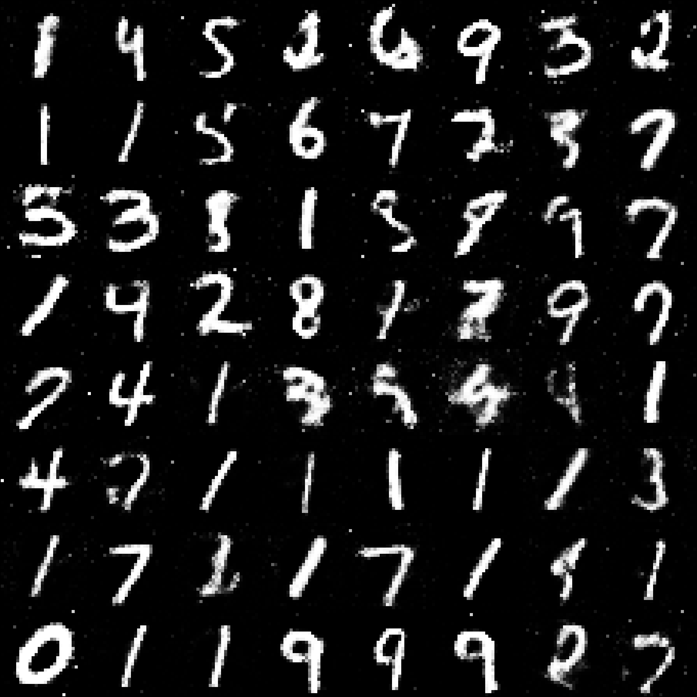
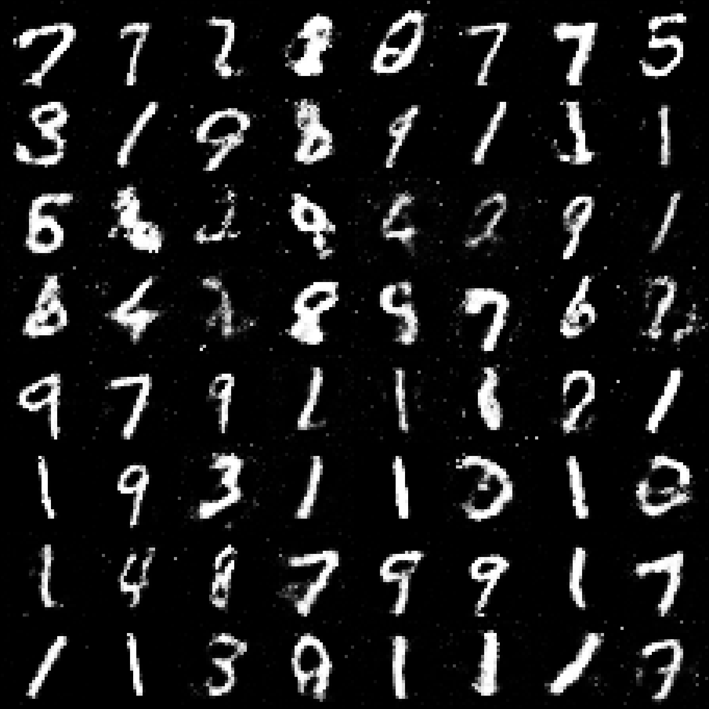
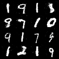
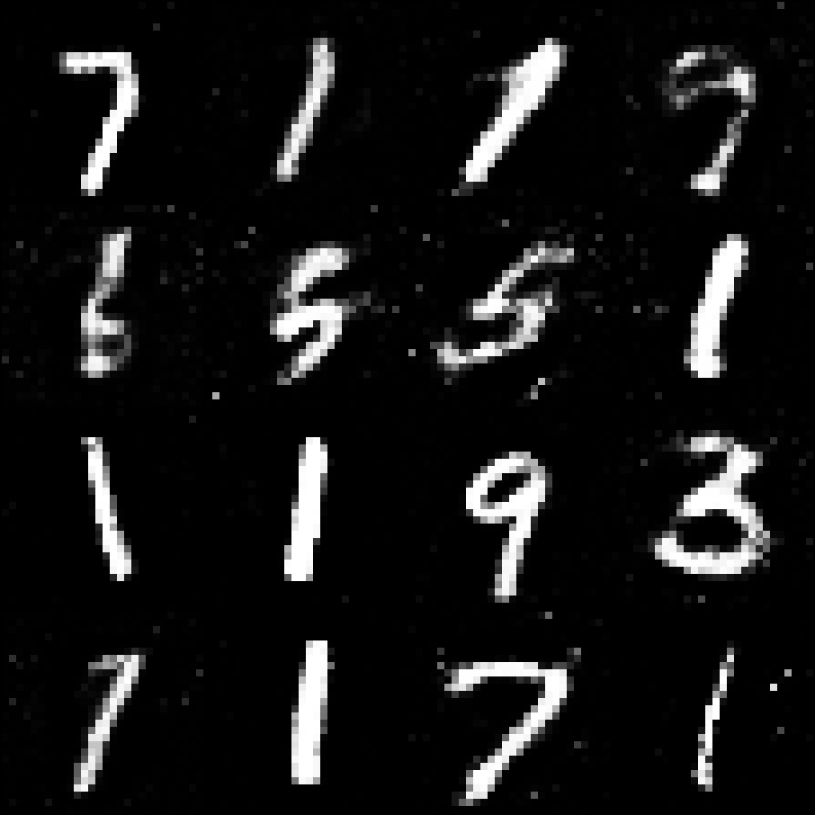
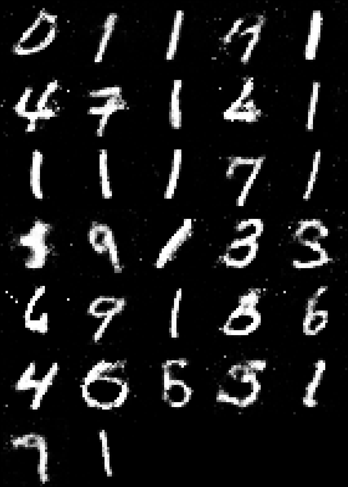

Генеративное искусство нового поколения
Repin 2.0 — это мощная GAN-студия, объединяющая передовые нейросетевые алгоритмы и высокую производительность для создания уникального цифрового контента.


Почему Repin 2.0?
🚀
XPU Ускорение
Оптимизировано для Intel XPU и PyTorch 2.0+, обеспечивая молниеносную генерацию.
🎨
8x Upscaling
Алгоритмы масштабирования позволяют увеличивать детализацию без потери четкости.
💻
Rich CLI
Интуитивный и эстетичный интерфейс командной строки для полного контроля.
Галерея работ



Terminal Experience
cli.py — Repin 2.0
python cli.py
Loading Repin 2.0 Core...
Device detected: XPU
Model weights loaded. Ready for generation.